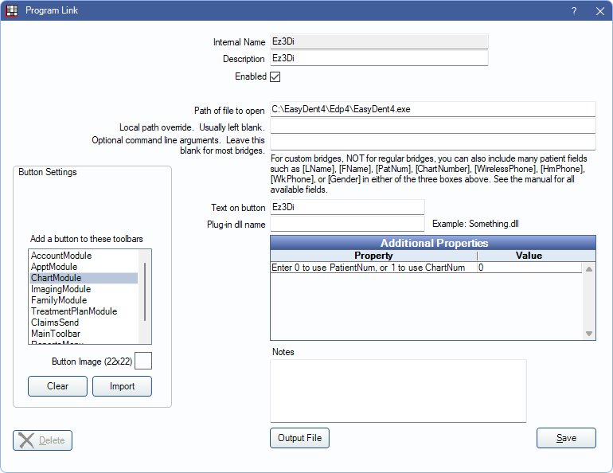

Ez3Di Bridge
In the Main Menu, click Setup, Program Links. Double-click on Ez3Di.
Ez3Di is an imaging product from Vatech. Website: https://vatechamerica.com/products/ez3d-i
If using EzDenti for 2-D imaging, set up the EzDenti Bridge.
To enable the bridge:
- Check the Enabled box.
- Verify the Path of file to open.
- Double-click on Additional Properties to change settings. Use the PatNum (enter 0) or ChartNum (enter 1) as the patient ID.
- Set up a clickable bridge button.
- Under Add a button to these toolbars, highlight where to display the button.
- Enter the Text on button.
- (Optional) Import an image to show on the button (22 x 22 pixels).
- If using clinics, click Hide Button for Clinics. Select which clinics the button should display on.
- Click Save
Technical Details
The bridge sends patient data from Open Dental to an XML text file. Example file:
<LinkageParameter>
<Patient LastName="Smith" FirstName="John" ChartNumber="123">
<Birthday>18/12/1972</Birthday>
<Address>123 Main St, Salem, OR</Address>
<ZipCode>97302</ZipCode>
<Phone>(503)363-5432</Phone>
<Mobile>(503)215-3215</Mobile>
<SocialID>123456789</SocialID>
<Gender>Male</Gender>
</Patient>
</LinkageParameter>
The text file is called linkage.xml, and is created in the same folder on the local computer as the EasyDent program is located.
Open Dental then launches Ez3Di, which picks up the information in the linkage.xml file.
If no file is present, Ez3Di opens with no patient selected.
If the patient is not recognized by Ez3Di, a new patient is created in Ez3Di.